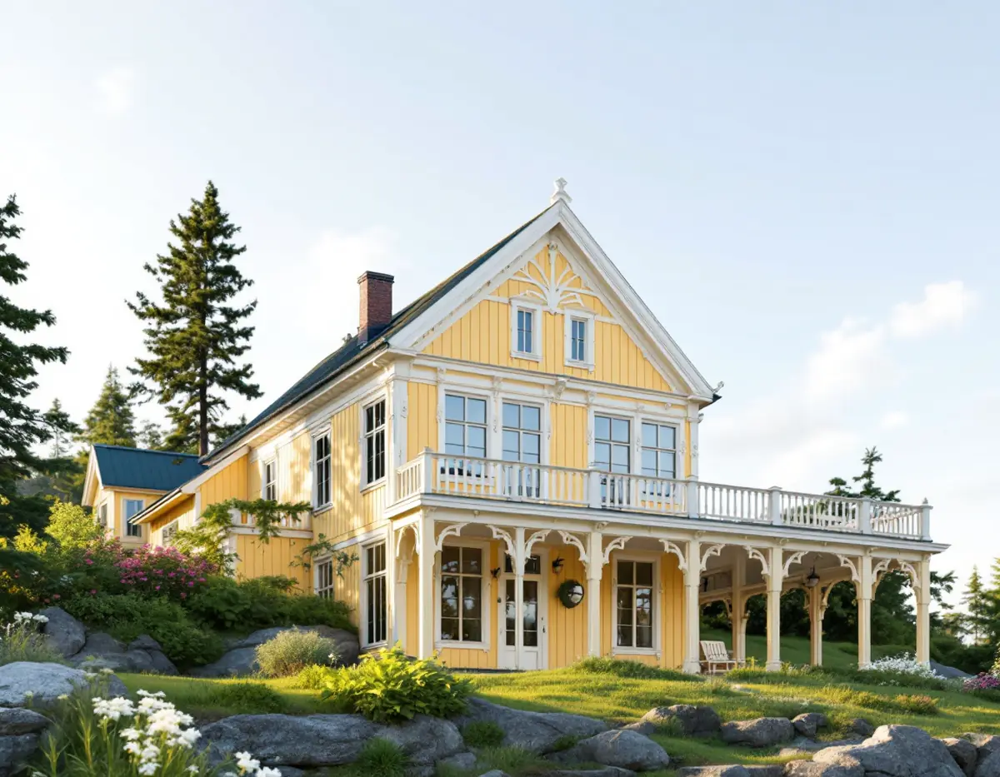
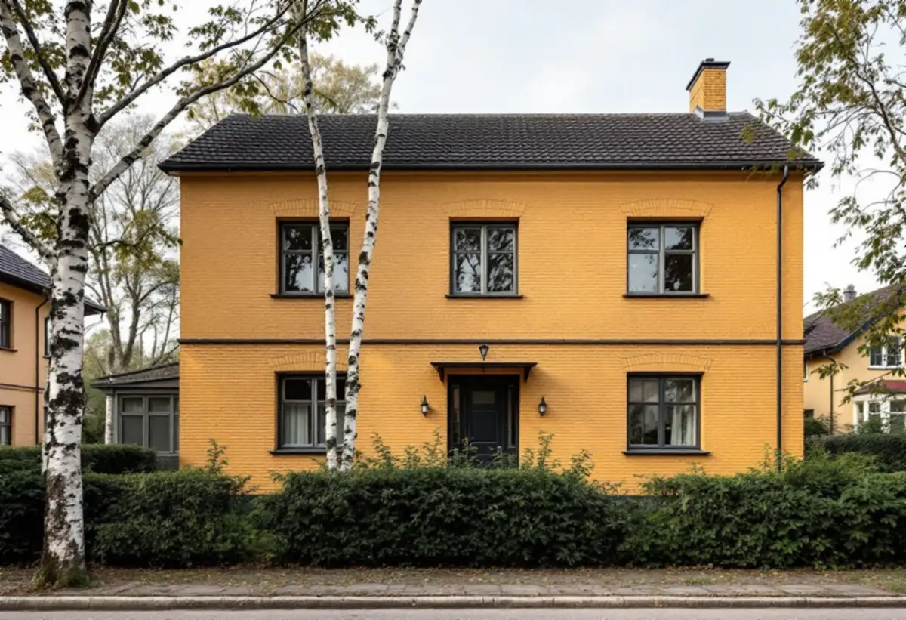

Platsbesök
Vi tittar på fasadmaterial, fönster och snickerier och gör skrapprov för att se vilken färg som sitter på.
Haninge kommun har skrivit färgråd för nästan varje sorts småhus i kommunen, från egnahemmen i Tungelsta till sommarvillorna på Dalarö. Råden gäller som vägledning även där husen inte är utpekade som särskilt värdefulla. Geal Entreprenad AB tar målningsuppdrag i hela Haninge, med gratis platsbesök och skriftligt kostnadsförslag.

Skriften Haninges karaktärsmiljöer delar in bebyggelsen i tidstypiska grupper och beskriver material och färger för var och en. Egnahemmen från 1910–1940-talen, i bland annat Tungelsta, Vendelsö och Västerhaninge, kännetecknas av träpanel, enkelt spröjsade fönster och tegeltäckta tak.
Folkhemmets småhus från 1940-talet beskrivs som enkla villor i trä, puts eller tegel med färgsättning i ljusa eller mustiga kulörer. På 1950-talet kombinerades ofta rött eller gult tegel med grov spritputs eller trä i mustiga kulörer. Rekordårens grupphus från 1960–1980-talen har varierande material, men mustiga färger är vanliga, och skriften noterar att färgsättningen blev ljusare under 1980-talet när pastellfärgerna slog igenom.
För sommarnöjena, med Dalarö och Smådalarö som exempel, skriver kommunen att olje- och slamfärger i ljusa och mustiga kulörer är vanliga. I de agrara miljöerna är falurött vanligast på bostadshusen, men även ljusa slam- och oljefärger förekommer.

I områden där sommarstugor permanentas, som Hermanstorp, Norrby och Kolartorp, beskriver kommunen en blandning av gamla gårdar, sommarbostäder och nya typhus i kuperad terräng med mycket barr- och lövträd. Råden för de områdena är ovanligt raka: undvik fasadkulörer i vita nyanser, välj gärna rött, brunt, grönt eller gult.
För gårdarna på landsbygden skriver kommunen att en tillbyggnad ska anpassas i färg och form till den ursprungliga volymen, och för sommarvillornas panelarkitektur att tillbyggnader ska utföras i samma arkitektoniska utformning som huset. För den som både bygger till och målar om är det enklast att bestämma kulören för hela huset innan arbetet börjar, så att gammal och ny panel får samma behandling. Mer om själva tillbyggnaden finns under tillbyggnad.
För folkhemmets hus skriver kommunen att dörrar och fönster är en bärande del av byggnadens karaktär och att ursprunglig utformning och färgsättning ska värnas och vara utgångspunkt vid förändring. Det betyder att foder och bågar i originalkulör är värda att behålla även när fasaden i övrigt får ny färg.
Skriften varnar också för fasadändringar som avviker från husets ursprungliga utformning, och ger exemplet att en fasad i tegel inte ska putsas. Samma logik gäller målning: ett rött eller gult fasadtegel som inte har målats tidigare bör helst få förbli omålat, medan putspartierna och träet bredvid underhålls.
Riksantikvarieämbetet påpekar att fönster, vattbräder, trappor och räcken är byggnadsdelar som bör underhållsmålas löpande, eftersom de tar mest väder och skadas fort om målningen släpper. Är fönstren för dåliga för att renoveras, se fönsterbyte.
Sedan 1 december 2025 krävs normalt inget bygglov för att byta kulör på ett en- eller tvåbostadshus, enligt Boverket. Haninge kommun skriver att skärpta krav gäller i särskilt värdefulla områden och i riksintressen för kulturmiljövården, och att ändringar alltid ska göras varsamt. Kommunen uppdaterar sitt digitala kartskikt över särskilt värdefulla kulturmiljöer, och tills det är klart kan bygglovsenheten svara på om en fastighet berörs.
Dalarö–Jutholmen–Dalarö skans är riksintresse för kulturmiljövården, med sommarvillorna från slutet av 1800-talet som en del av motiveringen. Där kan detaljplanen för den enskilda fastigheten ha egna bestämmelser, så den behöver läsas först. Kommunen påminner om att all bebyggelse omfattas av hänsyns- och varsamhetskraven i plan- och bygglagen, oavsett om karaktärsmiljöerna är juridiskt bindande eller inte.
Dalarö ligger vid inloppet till Stockholm och tar vind från öppet vatten. Östersjön är bräckt, enligt SMHI med 6–9 gram salt per kilo i Egentliga Östersjön, men regn och blåst räcker för att en fasad mot sjön ska slitas betydligt fortare än en mot skogen. I omvandlingsområdena står husen i stället tätt inpå träden, där fasaderna torkar långsamt och får påväxt som måste tvättas bort före målning.
Vi tittar på fasadmaterial, fönster och snickerier och gör skrapprov för att se vilken färg som sitter på.
Vi går igenom vad karaktärsmiljöerna säger om husets tid och om fastigheten berörs av skärpta krav.
Underarbete, färgtyp och antal strykningar specificeras, och tillbyggnader räknas in.
Tvätt av påväxt, skrapning, lagning av trä och kittning av fönster.
Strykningarna görs i lämpligt väder och med de torktider färgtypen kräver.
Vi går igenom fasaden tillsammans och bättrar där det behövs.
Skatteverket räknar målning av fasader, fönster, väggar, tak och golv samt tapetsering som rotarbete i småhus, men inte målning av staket och murar. Avdraget är 30 procent av arbetskostnaden, högst 50 000 kr per person och år, och ROT och RUT får sammanlagt vara högst 75 000 kr.
Ett fritidshus du själv äger kan också ge rotavdrag. Färgen och övrigt material ingår inte. Geal drar avdraget direkt på fakturan.
Kostnaden beror på hur mycket som måste skrapas och lagas, hur många fönster och detaljer som ingår och hur högt huset är. På sommarvillor med rika snickerier och glasverandor tar detaljerna mest tid, på grupphus är det fasadytan. Platsbesöket är gratis och du får ett skriftligt kostnadsförslag.
Fasad, fönster och invändig målning.
Målare i Stockholm →Takbyte, takbesiktning och plåtarbeten.
Takläggare i Haninge →Dalarö, Vendelsö och Brandbergen.
Takrenovering i Haninge →Skjutfält, kulturmiljö och skärgårdstomter.
Attefallshus i Haninge →Vakuumtoalett, sluten tank och öarna.
Badrumsrenovering i Haninge →Nytt hus och tillbyggnad i omvandlingsområden.
Byggföretag i Haninge →Mustiga 50-tal och pastell.
Fasadmålning i Haninge →Tegelvillor, grupphus och panelade gårdar.
Fasadrenovering i Haninge →Sportstugor och fönster i skärgårdsväder.
Fönsterbyte i Haninge →Gårdens fönster, från boningshus till ladugård.
Fönsterrenovering i Haninge →Egnahem, sportstugor och hus i sluttning.
Golvläggare i Haninge →Laga och slipa trägolvet i villan.
Golvslipning i Haninge →Egnahem, grupphus och Dalarö.
Köksrenovering i Haninge →Falsad plåt, sjöbodar och beslag i Haninge.
Plåtslagare i Haninge →Verandor, altaner och skärmtak.
Snickare i Haninge →Kontrollplan och riskbedömning vid takbyte.
Takbyte i Haninge →Ny tapet och gamla lager i äldre villor.
Tapetsering i Haninge →Lov, situationsplan och kontrollplan.
Tillbyggnad i Haninge →Folkhemsvillan inifrån.
Totalrenovering i Haninge →